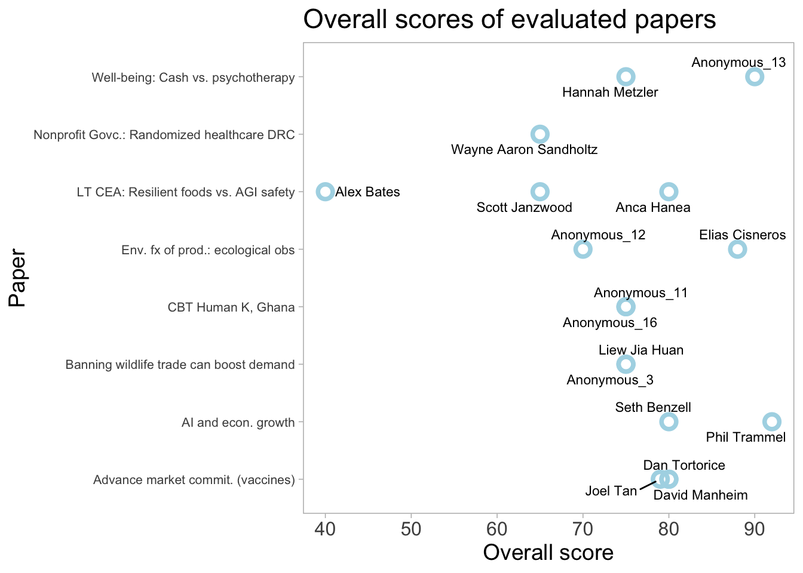
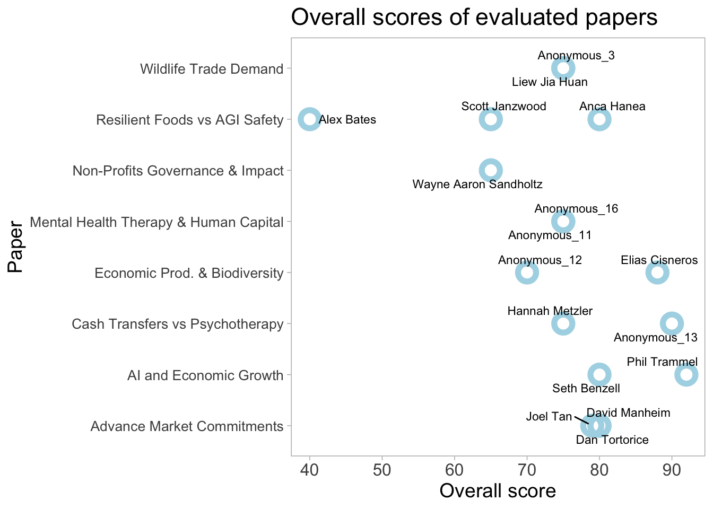
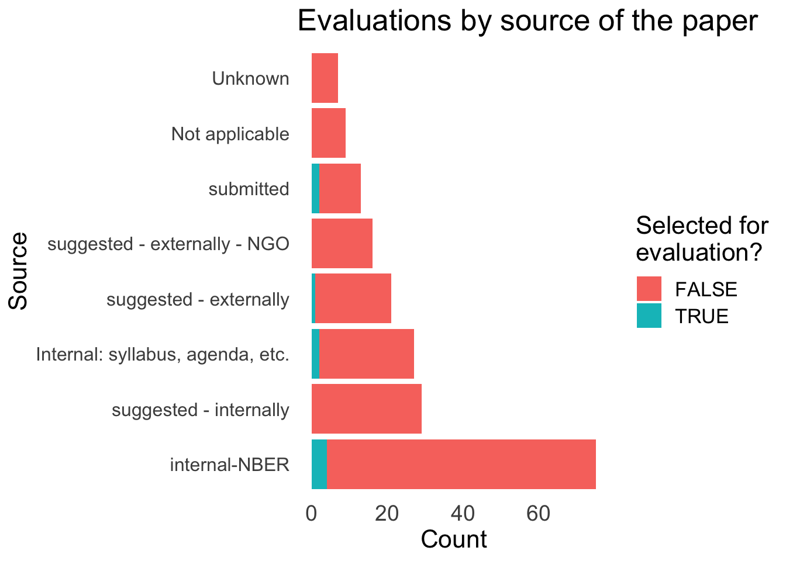

base_id<-"appbPYEw9nURln7Qg"# Set your Airtable API key#Sys.setenv(AIRTABLE_API_KEY = "") #this should be set in my .Renviron file# Read data from a specific viewevals<-air_get(base =base_id, "output_eval")all_pub_records<-data.frame()pub_records<-air_select(base =base_id, table ="crucial_research")# Append the records to the listall_pub_records<-bind_rows(all_pub_records, pub_records)# While the length of the records list is 100 (the maximum), fetch more recordswhile(nrow(pub_records)==100){# Get the ID of the last record in the listoffset<-get_offset(pub_records)# Fetch the next 100 records, starting after the last IDpub_records<-air_select(base =base_id, table ="crucial_research", offset =offset)# Append the records to the dfall_pub_records<-bind_rows(all_pub_records, pub_records)}
just the useful and publish-able data, clean a bit
colnames(evals)<-snakecase::to_snake_case(colnames(evals))evals_pub<-evals%>%dplyr::rename(stage_of_process =stage_of_process_todo_from_crucial_research_2)%>%mutate(stage_of_process =unlist(stage_of_process))%>%dplyr::filter(stage_of_process=="published")%>%select(id, crucial_research, evaluator_name, category, source_main, author_agreement, overall, lb_overall, ub_overall, conf_index_overall, advancing_knowledge_and_practice, lb_advancing_knowledge_and_practice, ub_advancing_knowledge_and_practice, conf_index_advancing_knowledge_and_practice, methods_justification_reasonableness_validity_robustness, lb_methods_justification_reasonableness_validity_robustness, ub_methods_justification_reasonableness_validity_robustness, conf_index_methods_justification_reasonableness_validity_robustness, logic_communication, lb_logic_communication, ub_logic_communication, conf_index_logic_communication, engaging_with_real_world_impact_quantification_practice_realism_and_relevance, lb_engaging_with_real_world_impact_quantification_practice_realism_and_relevance, ub_engaging_with_real_world_impact_quantification_practice_realism_and_relevance, conf_index_engaging_with_real_world_impact_quantification_practice_realism_and_relevance, relevance_to_global_priorities, lb_relevance_to_global_priorities, ub_relevance_to_global_priorities, conf_index_relevance_to_global_priorities, journal_quality_predict, lb_journal_quality_predict, ub_journal_quality_predict, conf_index_journal_quality_predict, open_collaborative_replicable, conf_index_open_collaborative_replicable, lb_open_collaborative_replicable, ub_open_collaborative_replicable, merits_journal, lb_merits_journal, ub_merits_journal, conf_index_merits_journal)evals_pub%<>%mutate(across(everything(), ~map(.x, ~ifelse(is.null(.x), NA, .x)), .names ="{.col}_unlisted"))%>%# for each cotidyr::unnest_wider(category, names_sep ="")%>%mutate(across(everything(), unlist))#unlist list columns#Todo -- check the unlist is not propagating the entry#Note: category, topic_subfield, and source have multiple meaningful categories. These will need care
Shorten names
new_names<-c("eval_name"="evaluator_name","cat_1"="category1","cat_2"="category2","cat_3"="category3","crucial_rsx"="crucial_research","conf_overall"="conf_index_overall","adv_knowledge"="advancing_knowledge_and_practice","lb_adv_knowledge"="lb_advancing_knowledge_and_practice","ub_adv_knowledge"="ub_advancing_knowledge_and_practice","conf_adv_knowledge"="conf_index_advancing_knowledge_and_practice","methods"="methods_justification_reasonableness_validity_robustness","lb_methods"="lb_methods_justification_reasonableness_validity_robustness","ub_methods"="ub_methods_justification_reasonableness_validity_robustness","conf_methods"="conf_index_methods_justification_reasonableness_validity_robustness","logic_comms"="logic_communication","lb_logic_comms"="lb_logic_communication","ub_logic_comms"="ub_logic_communication","conf_logic_comms"="conf_index_logic_communication","real_world"="engaging_with_real_world_impact_quantification_practice_realism_and_relevance","lb_real_world"="lb_engaging_with_real_world_impact_quantification_practice_realism_and_relevance","ub_real_world"="ub_engaging_with_real_world_impact_quantification_practice_realism_and_relevance","conf_real_world"="conf_index_engaging_with_real_world_impact_quantification_practice_realism_and_relevance","gp_relevance"="relevance_to_global_priorities","lb_gp_relevance"="lb_relevance_to_global_priorities","ub_gp_relevance"="ub_relevance_to_global_priorities","conf_gp_relevance"="conf_index_relevance_to_global_priorities","journal_predict"="journal_quality_predict","lb_journal_predict"="lb_journal_quality_predict","ub_journal_predict"="ub_journal_quality_predict","conf_journal_predict"="conf_index_journal_quality_predict","open_sci"="open_collaborative_replicable","conf_open_sci"="conf_index_open_collaborative_replicable","lb_open_sci"="lb_open_collaborative_replicable","ub_open_sci"="ub_open_collaborative_replicable","conf_merits_journal"="conf_index_merits_journal")evals_pub<-evals_pub%>%rename(!!!new_names)# make the old names into labelslibrary(stringr)# Create a list of labelslabels<-str_replace_all(new_names, "_", " ")labels<-str_to_title(labels)# Assign labels to the dataframe# for(i in seq_along(labels)) {# col_name <- new_names[names(new_names)[i]]# label <- labels[i]# attr(evals_pub[[col_name]], "label") <- label# }#
Reconcile the uncertainty ratings and CIs (first-pass)
Impute CIs from stated confidence level ‘dots’, correspondence loosely described here
For 0-100 ratings, code the LB as \(min(R - 4\times \frac{R}{100},0)\) and the UB as \(max(R + 4\times \frac{R}{100},0)\), where R is the stated (middle) rating. This ‘scales’ the CI, as interpreted, to be proportional to the rating, with a maximum ‘interval’ of about 8, with the rating is about 96.
4 = Very*confident: 90% confidence interval +/- 8 points or less
For 0-100 ratings, code the LB as \(min(R - 8\times \frac{R}{100},0)\) and the UB as \(max(R + 8\times \frac{R}{100},0)\), where R is the stated (middle) rating.
3 = Somewhat** confident: 90% confidence interval +/- 15 points or less
2 = Not very** confident: 90% confidence interval, +/- 25 points or less
Comparable scaling for the 2-3 ratings as for the 4 and 5 rating.
1 = Not** confident: (90% confidence interval +/- more than 25 points)
Code LB as \(min(R - 37.5\times \frac{R}{100},0)\) and the UB as \(max(R + 37.5\times \frac{R}{100},0)\).
This is just a first-pass. There might be a more information-theoretic way of doing this. On the other hand, we might be switching the evaluations to use a different tool soon, perhaps getting rid of the 1-5 confidence ratings.
reconcile explicit bounds and stated confidence level
# Define the baseline widths for each confidence ratingbaseline_widths<-c(4, 8, 15, 25, 37.5)# Define a function to calculate the lower and upper bounds, where given only an indexcalc_bounds<-function(rating, confidence, lb_explicit, ub_explicit, scale=100){# Check if confidence is NAif(is.na(confidence)){return(c(lb_explicit, ub_explicit))# Return explicit bounds if confidence is NA}else{baseline_width<-baseline_widths[confidence]lb<-pmax(rating-baseline_width*rating/scale, 0)ub<-pmin(rating+baseline_width*rating/scale, scale)return(c(lb, ub))}}# Function to calculate bounds for a single categorycalc_category_bounds<-function(df, category, scale=100){# Calculate boundsbounds<-mapply(calc_bounds, df[[category]], df[[paste0("conf_", category)]], df[[paste0("lb_", category)]], df[[paste0("ub_", category)]])# Convert to data frame and ensure it has the same number of rows as the inputbounds_df<-as.data.frame(t(bounds))rownames(bounds_df)<-NULL# Add bounds to original data framedf[[paste0(category, "_lb_imp")]]<-bounds_df[, 1]df[[paste0(category, "_ub_imp")]]<-bounds_df[, 2]return(df)}# Lists of categoriesrating_cats<-c("overall", "adv_knowledge", "methods", "logic_comms", "real_world", "gp_relevance", "open_sci")#... 'predictions' are currently 1-5 (0-5?)pred_cats<-c("journal_predict", "merits_journal")# Apply the function to each category# DR: I don't love this looping 'edit in place' code approach, but whateverfor(catinrating_cats){evals_pub<-calc_category_bounds(evals_pub, cat, scale=100)}for(catinpred_cats){evals_pub<-calc_category_bounds(evals_pub, cat, scale=5)}
Next, we present the ratings and predictions along with ‘uncertainty measures’. We use “ub imp” (and “lb imp”) to denote the upper and lower bounds given by evaluators. Where evaluators gave only a 1-5 confidence level1, we use the imputations discussed and coded above.
By topic/cause area (Global health, economic development, impact of technology, global catastrophic risks, etc. )
By source (submitted, identified with author permission, direct evaluation)
Timing of intake and evaluation (Consider: timing might be its own section or chapter; this is a major thing journals track, and we want to keep track of ourselves)
Code
#Add in the 3 different evaluation input sources#update to be automated rather than hard-coded - to look at David's work herepapers_considered=all_pub_records%>%nrow()papers_deprio=all_pub_records%>%filter(`stage of process/todo`=="de-prioritized")%>%nrow()papers_evaluated=all_pub_records%>%filter(`stage of process/todo`%in%c("published","contacting/awaiting_authors_response_to_evaluation","awaiting_publication_ME_comments","awaiting_evaluations"))%>%nrow()papers_complete=all_pub_records%>%filter(`stage of process/todo`=="published")%>%nrow()papers_in_progress=papers_evaluated-papers_completepapers_still_in_consideration=all_pub_records%>%filter(`stage of process/todo`=="considering")%>%nrow()fig<-plot_ly( type ="sankey", orientation ="h", node =list( label =c("All paper considered", "Papers evaluated", "Papers complete", "Papers in progress", "Papers still in consideration", "Papers rejected"), color =c("orange", "green", "green", "orange", "orange", "red"), pad =15, thickness =20, line =list( color ="black", width =0.5)), link =list( source =c(0,1,1,0,0), target =c(1,2,3,4,5), value =c(papers_evaluated,papers_complete,papers_in_progress,papers_still_in_consideration,papers_deprio)))fig<-fig%>%layout( title ="Unjournal paper funnel", font =list( size =10))fig
The distribution of ratings and predictions
For each category and prediction (overall and by paper)
Code
summary_df<-evals_pub%>%distinct(crucial_research_unlisted, .keep_all =T)%>%group_by(category_unlisted)%>%summarise(count =n())summary_df$category_unlisted[is.na(summary_df$category_unlisted)]<-"Unknown"summary_df<-summary_df%>%arrange(-desc(count))%>%mutate(category_unlisted =factor(category_unlisted, levels =unique(category_unlisted)))# Create stacked bar chartggplot(summary_df, aes(x =category_unlisted, y =count))+geom_bar(stat ="identity")+coord_flip()+# This makes the chart horizontaltheme_minimal()+labs(x ="Paper category", y ="Count", title ="Count of evaluated papaers by category")

Code
wrap_text<-function(text, width){sapply(strwrap(text, width =width, simplify =FALSE), paste, collapse ="\n")}evals_pub$wrapped_pub_names<-wrap_text(evals_pub$crucial_research_unlisted, width =60)# original namesoriginal_names<-evals_pub$crucial_research_unlisted# shortened namesshortened_names<-c("Resilient Foods vs AGI Safety","Advance Market Commitments","Wildlife Trade Demand","Advance Market Commitments","Economic Prod. & Biodiversity","Advance Market Commitments","AI and Economic Growth","Wildlife Trade Demand","Non-Profits Governance & Impact","AI and Economic Growth","Mental Health Therapy & Human Capital","Economic Prod. & Biodiversity","Cash Transfers vs Psychotherapy","Cash Transfers vs Psychotherapy","Resilient Foods vs AGI Safety","Mental Health Therapy & Human Capital","Resilient Foods vs AGI Safety")# create a named vector for easy lookupname_lookup<-setNames(shortened_names, original_names)# use the lookup to create the new columnevals_pub$shortened_names<-name_lookup[evals_pub$crucial_research_unlisted]evals_pub$wrapped_shortened_names<-wrap_text(evals_pub$shortened_names, width =15)#Move this to do this 'cleaning' earlierevals_pub$revised_evaluator_name<-ifelse(grepl("^\\b\\w+\\b$|\\bAnonymous\\b", evals_pub$evaluator_name_unlisted),paste0("Anonymous_", seq_along(evals_pub$evaluator_name_unlisted)),evals_pub$evaluator_name_unlisted)# Dot plotggplot(evals_pub, aes(x =shortened_names, y =overall))+geom_point(stat ="identity", size =4, shape =1, colour ="lightblue", stroke =3)+geom_text_repel(aes(label =revised_evaluator_name), size =3, box.padding =unit(0.35, "lines"), point.padding =unit(0.3, "lines"))+coord_flip()+# flipping the coordinates to have categories on y-axis (on the left)theme_light()+xlab("Paper")+# remove x-axis labelylab("Overall score")+# name y-axisggtitle("Overall scores of evaluated papers")+# add titletheme( panel.grid.major =element_blank(), panel.grid.minor =element_blank(), text =element_text(size =14), # changing all text size to 16 axis.text.y =element_text(size =10), axis.text.x =element_text(size =12))

Code
ggplot(evals_pub, aes(x =source_main))+geom_bar(position ="stack", stat ="count")+labs(x ="Source", y ="Count")+coord_flip()+# flipping the coordinates to have categories on y-axis (on the left)theme_light()+theme_minimal()+ggtitle("Evaluations by source of the paper")+# add titletheme( panel.grid.major =element_blank(), panel.grid.minor =element_blank(), text =element_text(size =16), # changing all text size to 16 axis.text.y =element_text(size =14), axis.text.x =element_text(size =14))

Code
all_pub_records$is_evaluated=all_pub_records$`stage of process/todo`%in%c("published","contacting/awaiting_authors_response_to_evaluation","awaiting_publication_ME_comments","awaiting_evaluations")all_pub_records$source_main[all_pub_records$source_main=="NA"]<-"Not applicable"all_pub_records$source_main=tidyr::replace_na(all_pub_records$source_main, "Unknown")ggplot(all_pub_records, aes(x =fct_infreq(source_main), fill =is_evaluated))+geom_bar(position ="stack", stat ="count")+labs(x ="Source", y ="Count", fill ="Selected for\nevaluation?")+coord_flip()+# flipping the coordinates to have categories on y-axis (on the left)theme_light()+theme_minimal()+ggtitle("Evaluations by source of the paper")+# add titletheme( panel.grid.major =element_blank(), panel.grid.minor =element_blank(), text =element_text(size =16), # changing all text size to 16 axis.text.y =element_text(size =14), axis.text.x =element_text(size =14))
The Governance Of Non-Profits And Their Social Impact: Evidence From A Randomized Program In Healthcare In DRC
Wayne Aaron Sandholtz
GH&D
internal-NBER
65
70
60
55
3.6
The Comparative Impact of Cash Transfers and a Psychotherapy Program on Psychological and Economic Well-being
Anonymous Reviewer 1
GH&D
internal-NBER
90
90
90
80
4.0
The Comparative Impact of Cash Transfers and a Psychotherapy Program on Psychological and Economic Well-being
Hannah Metzler
GH&D
internal-NBER
75
70
90
75
3.0
Mental Health Therapy as a Core Strategy for Increasing Human Capital: Evidence from Ghana (renamed “Cognitive Behavioral Therapy among Ghana’s Rural Poor Is Effective Regardless of Baseline Mental Distress”)
b62275b05d45f43cce4e494d31a07c19
NA
internal-NBER
75
60
90
70
4.0
Mental Health Therapy as a Core Strategy for Increasing Human Capital: Evidence from Ghana (renamed “Cognitive Behavioral Therapy among Ghana’s Rural Poor Is Effective Regardless of Baseline Mental Distress”)
47273de4862aaff608f9086d4d643054
NA
internal-NBER
75
65
60
75
NA
Long term cost-effectiveness of resilient foods for global catastrophes compared to artificial general intelligence safety (Denkenberger et al)
Scott Janzwood
long-term-relevant
submitted
65
NA
NA
NA
NA
Long term cost-effectiveness of resilient foods for global catastrophes compared to artificial general intelligence safety (Denkenberger et al)
Anca Hanea
long-term-relevant
submitted
80
80
70
85
3.5
Long term cost-effectiveness of resilient foods for global catastrophes compared to artificial general intelligence safety (Denkenberger et al)
Alex Bates
long-term-relevant
submitted
40
30
50
60
2.0
Kremer, M., Levin, J. and Snyder, C.M., 2020, May. Advance Market Commitments: Insights from Theory and Experience. In AEA Papers and Proceedings (Vol. 110, pp. 269-73).
David Manheim
policy
internal-from-syllabus-agenda-policy-database
80
25
95
75
3.0
Kremer, M., Levin, J. and Snyder, C.M., 2020, May. Advance Market Commitments: Insights from Theory and Experience. In AEA Papers and Proceedings (Vol. 110, pp. 269-73).
Joel Tan
policy
internal-from-syllabus-agenda-policy-database
79
90
70
70
5.0
Kremer, M., Levin, J. and Snyder, C.M., 2020, May. Advance Market Commitments: Insights from Theory and Experience. In AEA Papers and Proceedings (Vol. 110, pp. 269-73).
Dan Tortorice
policy
internal-from-syllabus-agenda-policy-database
80
90
80
80
4.0
Banning wildlife trade can boost demand for unregulated threatened species
Anonymous
conservation
submitted
75
70
80
70
3.0
Banning wildlife trade can boost demand for unregulated threatened species
Liew Jia Huan
conservation
submitted
75
80
50
70
2.5
Aghion, P., Jones, B.F., and Jones, C.I., 2017. Artificial Intelligence and Economic Growth
Phil Trammel
macroeconomics
internal-from-syllabus-agenda-policy-database
92
97
70
45
3.5
Aghion, P., Jones, B.F., and Jones, C.I., 2017. Artificial Intelligence and Economic Growth
Seth Benzell
macroeconomics
internal-from-syllabus-agenda-policy-database
80
75
80
70
NA
“The Environmental Effects of Economic Production: Evidence from Ecological Observations (previous title: Economic Production and Biodiversity in the United States)”
Elias Cisneros
NA
internal-NBER
88
90
75
80
4.0
“The Environmental Effects of Economic Production: Evidence from Ecological Observations (previous title: Economic Production and Biodiversity in the United States)”
1ef6aff67012a1750f88f631fddb346c
NA
internal-NBER
70
70
70
75
4.0
By field and topic area of paper
By submission/selection route
By evaluation manager
Relationship among the ratings (and predictions)
Correlation matrix
ANOVA
PCA (Principle components)
With other ‘control’ factors?
How do the specific measures predict the aggregate ones (overall rating, merited publication)
CF ‘our suggested weighting’
2.2 Aggregation of expert opinion (modeling)
2.3 Notes on sources and approaches
Hanea et al
(Consult, e.g., repliCATS/Hanea and others work; meta-science and meta-analysis approaches)
aggrecat package
Although the accuracy, calibration, and informativeness of the majority of methods are very similar, a couple of the aggregation methods consistently distinguish themselves as among the best or worst. Moreover, the majority of methods outperform the usual benchmarks provided by the simple average or the median of estimates.
However, these are in a different context. Most of those measures are designed to deal with probablistic forecasts for binary outcomes, where the predictor also gives a ‘lower bound’ and ‘upper bound’ for that probability. We could roughly compare that to our continuous metrics with 90% CI’s (or imputations for these).
Furthermore, many (all their successful measures?) use ‘performance-based weights’, accessing metrics from prior prediction performance of the same forecasters We do not have these, nor do we have a sensible proxy for this.
… we show how experts can be ranked based on their knowledge and their level of (un)certainty. By letting experts specify their knowledge in the form of a probability distribution, we can assess how accurately they can predict new data, and how appropriate their level of (un)certainty is. The expert’s specified probability distribution can be seen as a prior in a Bayesian statistical setting. We evaluate these priors by extending an existing prior-data (dis)agreement measure, the Data Agreement Criterion, and compare this approach to using Bayes factors to assess prior specification. We compare experts with each other and the data to evaluate their appropriateness. Using this method, new research questions can be asked and answered, for instance: Which expert predicts the new data best? Is there agreement between my experts and the data? Which experts’ representation is more valid or useful? Can we reach convergence between expert judgement and data? We provided an empirical example ranking (regional) directors of a large financial institution based on their predictions of turnover.
See Gsheet HERE, generated from an Elicit.org inquiry.
In spite of the caveats in the fold above, we construct some measures of aggregate beliefs using the aggrecat package. We will make (and explain) some ad-hoc choices here. We present these:
For each paper
For categories of papers and cross-paper categories of evaluations
For the overall set of papers and evaluations
We can also hold onto these aggregated metrics for later use in modeling.
Simple averaging
Bayesian approaches
Best-performing approaches from elsewhere
Assumptions over unit-level random terms
Explicit modeling of ‘research quality’ (for use in prizes, etc.)
Use the above aggregation as the outcome of interest, or weight towards categories of greater interest?
Model with controls – look for greatest positive residual?
2.4 Inter-rater reliability
2.5 Decomposing variation, dimension reduction, simple linear models
2.6 Later possiblities
Relation to evaluation text content (NLP?)
Relation/prediction of later outcomes (traditional publication, citations, replication)
2.7 Scoping our future coverage
We have funding to evaluate roughly 50-70 papers/projects per year, given our proposed incentives.
Consider:
How many relevant NBER papers come out per year?
How much relevant work in other prestige archives?
What quotas do we want (by cause, etc.) and how feasible are these?
More or less, the ones who report a level for ‘conf overall’, although some people did this for some but not others↩︎
Source Code
# Evaluation data: description, exploration, checks```{r, warning=FALSE}#| label: load-packages#| code-summary: "load packages"source(here::here("code", "shared_packages_code.R"))#devtools::install_github("rethinkpriorities/rp-r-package")library(rethinkpriorities)#devtools::install_github("rethinkpriorities/r-noodling-package") #mainly used playing in real timelibrary(rnoodling)library(here)library(dplyr)library(pacman)p_load(formattable, sparkline, install=FALSE)p_load(DT, santoku, lme4, huxtable, janitor, emmeans, sjPlot, sjmisc, ggeffects, ggrepel, likert, labelled, plotly, stringr, install=FALSE)p_load(ggthemes, paletteer, ggridges, install=FALSE)select <- dplyr::select options(knitr.duplicate.label ="allow")options(mc.cores = parallel::detectCores())#rstan_options(auto_write = TRUE)#library(hunspell)#(brms)#devtools::install_github("bergant/airtabler")p_load(airtabler)#remotes::install_github("rmcelreath/rethinking")#library(rethinking)``````{r}#| label: aggrecat#| code-summary: "install aggrecat package"#devtools::install_github("metamelb-repliCATS/aggreCAT")``````{r}#| label: input_at#| code-summary: "input from airtable"base_id <-"appbPYEw9nURln7Qg"# Set your Airtable API key#Sys.setenv(AIRTABLE_API_KEY = "") #this should be set in my .Renviron file# Read data from a specific viewevals <-air_get(base = base_id, "output_eval") all_pub_records <-data.frame()pub_records <-air_select(base = base_id, table ="crucial_research")# Append the records to the listall_pub_records <-bind_rows(all_pub_records, pub_records)# While the length of the records list is 100 (the maximum), fetch more recordswhile(nrow(pub_records) ==100) {# Get the ID of the last record in the list offset <-get_offset(pub_records)# Fetch the next 100 records, starting after the last ID pub_records <-air_select(base = base_id, table ="crucial_research", offset = offset)# Append the records to the df all_pub_records <-bind_rows(all_pub_records, pub_records)}``````{r}#| label: extract#| code-summary: "just the useful and publish-able data, clean a bit"colnames(evals) <- snakecase::to_snake_case(colnames(evals))evals_pub <- evals %>% dplyr::rename(stage_of_process = stage_of_process_todo_from_crucial_research_2) %>%mutate(stage_of_process =unlist(stage_of_process)) %>% dplyr::filter(stage_of_process =="published") %>%select(id, crucial_research, evaluator_name, category, source_main, author_agreement, overall, lb_overall, ub_overall, conf_index_overall, advancing_knowledge_and_practice, lb_advancing_knowledge_and_practice, ub_advancing_knowledge_and_practice, conf_index_advancing_knowledge_and_practice, methods_justification_reasonableness_validity_robustness, lb_methods_justification_reasonableness_validity_robustness, ub_methods_justification_reasonableness_validity_robustness, conf_index_methods_justification_reasonableness_validity_robustness, logic_communication, lb_logic_communication, ub_logic_communication, conf_index_logic_communication, engaging_with_real_world_impact_quantification_practice_realism_and_relevance, lb_engaging_with_real_world_impact_quantification_practice_realism_and_relevance, ub_engaging_with_real_world_impact_quantification_practice_realism_and_relevance, conf_index_engaging_with_real_world_impact_quantification_practice_realism_and_relevance, relevance_to_global_priorities, lb_relevance_to_global_priorities, ub_relevance_to_global_priorities, conf_index_relevance_to_global_priorities, journal_quality_predict, lb_journal_quality_predict, ub_journal_quality_predict, conf_index_journal_quality_predict, open_collaborative_replicable, conf_index_open_collaborative_replicable, lb_open_collaborative_replicable, ub_open_collaborative_replicable, merits_journal, lb_merits_journal, ub_merits_journal, conf_index_merits_journal)evals_pub %<>%mutate(across(everything(), ~map(.x, ~ifelse(is.null(.x), NA, .x)), .names ="{.col}_unlisted")) %>%# for each co tidyr::unnest_wider(category, names_sep ="") %>%mutate(across(everything(), unlist)) #unlist list columns#Todo -- check the unlist is not propagating the entry#Note: category, topic_subfield, and source have multiple meaningful categories. These will need care ``````{r}#| label: shorten_names#| code-summary: "Shorten names "new_names <-c("eval_name"="evaluator_name","cat_1"="category1","cat_2"="category2","cat_3"="category3","crucial_rsx"="crucial_research","conf_overall"="conf_index_overall","adv_knowledge"="advancing_knowledge_and_practice","lb_adv_knowledge"="lb_advancing_knowledge_and_practice","ub_adv_knowledge"="ub_advancing_knowledge_and_practice","conf_adv_knowledge"="conf_index_advancing_knowledge_and_practice","methods"="methods_justification_reasonableness_validity_robustness","lb_methods"="lb_methods_justification_reasonableness_validity_robustness","ub_methods"="ub_methods_justification_reasonableness_validity_robustness","conf_methods"="conf_index_methods_justification_reasonableness_validity_robustness","logic_comms"="logic_communication","lb_logic_comms"="lb_logic_communication","ub_logic_comms"="ub_logic_communication","conf_logic_comms"="conf_index_logic_communication","real_world"="engaging_with_real_world_impact_quantification_practice_realism_and_relevance","lb_real_world"="lb_engaging_with_real_world_impact_quantification_practice_realism_and_relevance","ub_real_world"="ub_engaging_with_real_world_impact_quantification_practice_realism_and_relevance","conf_real_world"="conf_index_engaging_with_real_world_impact_quantification_practice_realism_and_relevance","gp_relevance"="relevance_to_global_priorities","lb_gp_relevance"="lb_relevance_to_global_priorities","ub_gp_relevance"="ub_relevance_to_global_priorities","conf_gp_relevance"="conf_index_relevance_to_global_priorities","journal_predict"="journal_quality_predict","lb_journal_predict"="lb_journal_quality_predict","ub_journal_predict"="ub_journal_quality_predict","conf_journal_predict"="conf_index_journal_quality_predict","open_sci"="open_collaborative_replicable","conf_open_sci"="conf_index_open_collaborative_replicable","lb_open_sci"="lb_open_collaborative_replicable","ub_open_sci"="ub_open_collaborative_replicable","conf_merits_journal"="conf_index_merits_journal")evals_pub <- evals_pub %>%rename(!!!new_names)# make the old names into labelslibrary(stringr)# Create a list of labelslabels <-str_replace_all(new_names, "_", " ")labels <-str_to_title(labels)# Assign labels to the dataframe# for(i in seq_along(labels)) {# col_name <- new_names[names(new_names)[i]]# label <- labels[i]# attr(evals_pub[[col_name]], "label") <- label# }# ```<!-- need airtable API stuff -->### Reconcile the uncertainty ratings and CIs (first-pass) {-}Impute CIs from stated confidence level 'dots', correspondence loosely described [here](https://effective-giving-marketing.gitbook.io/unjournal-x-ea-and-global-priorities-research/policies-projects-evaluation-workflow/evaluation/guidelines-for-evaluators#1-5-dots-explanation-and-relation-to-cis)::: {.callout-note collapse="true"}## Dots to interval choices> 5 = Extremely confident, i.e., 90% confidence interval spans +/- 4 points or less)For 0-100 ratings, code the LB as $min(R - 4\times \frac{R}{100},0)$ and the UB as $max(R + 4\times \frac{R}{100},0)$, where R is the stated (middle) rating. This 'scales' the CI, as interpreted, to be proportional to the rating, with a maximum 'interval' of about 8, with the rating is about 96.> 4 = Very*confident: 90% confidence interval +/- 8 points or lessFor 0-100 ratings, code the LB as $min(R - 8\times \frac{R}{100},0)$ and the UB as $max(R + 8\times \frac{R}{100},0)$, where R is the stated (middle) rating. > 3 = Somewhat** confident: 90% confidence interval +/- 15 points or less > 2 = Not very** confident: 90% confidence interval, +/- 25 points or lessComparable scaling for the 2-3 ratings as for the 4 and 5 rating.> 1 = Not** confident: (90% confidence interval +/- more than 25 points)Code LB as $min(R - 37.5\times \frac{R}{100},0)$ and the UB as $max(R + 37.5\times \frac{R}{100},0)$. This is just a first-pass. There might be a more information-theoretic way of doing this. On the other hand, we might be switching the evaluations to use a different tool soon, perhaps getting rid of the 1-5 confidence ratings.::: ```{r}#| label: reconcile_bounds#| code-summary: "reconcile explicit bounds and stated confidence level"# Define the baseline widths for each confidence ratingbaseline_widths <-c(4, 8, 15, 25, 37.5)# Define a function to calculate the lower and upper bounds, where given only an indexcalc_bounds <-function(rating, confidence, lb_explicit, ub_explicit, scale=100) {# Check if confidence is NAif (is.na(confidence)) {return(c(lb_explicit, ub_explicit)) # Return explicit bounds if confidence is NA } else { baseline_width <- baseline_widths[confidence] lb <-pmax(rating - baseline_width * rating / scale, 0) ub <-pmin(rating + baseline_width * rating / scale, scale)return(c(lb, ub)) }}# Function to calculate bounds for a single categorycalc_category_bounds <-function(df, category, scale=100) {# Calculate bounds bounds <-mapply(calc_bounds, df[[category]], df[[paste0("conf_", category)]], df[[paste0("lb_", category)]], df[[paste0("ub_", category)]])# Convert to data frame and ensure it has the same number of rows as the input bounds_df <-as.data.frame(t(bounds))rownames(bounds_df) <-NULL# Add bounds to original data frame df[[paste0(category, "_lb_imp")]] <- bounds_df[, 1] df[[paste0(category, "_ub_imp")]] <- bounds_df[, 2]return(df)}# Lists of categoriesrating_cats <-c("overall", "adv_knowledge", "methods", "logic_comms", "real_world", "gp_relevance", "open_sci")#... 'predictions' are currently 1-5 (0-5?)pred_cats <-c("journal_predict", "merits_journal")# Apply the function to each category# DR: I don't love this looping 'edit in place' code approach, but whateverfor (cat in rating_cats) { evals_pub <-calc_category_bounds(evals_pub, cat, scale=100)}for (cat in pred_cats) { evals_pub <-calc_category_bounds(evals_pub, cat, scale=5)}``````{r}#| label: savedatas#| code-summary: "save data for others' use"evals_pub %>%saveRDS(file =here("data", "evals.Rdata"))evals_pub %>%write_csv(file =here("data", "evals.csv"))#evals_pub %>% readRDS(file = here("data", "evals.Rdata"))```# Basic presentation## Simple data summaries/codebooks/dashboards and visualizationBelow, we give a data table of key attributes of the paper, the author, and the 'middle' ratings and predictions. ```{r eval = FALSE}#| label: datatable#| code-summary: "Data datable (all shareable relevant data)"( all_evals_dt <- evals_pub %>%arrange(crucial_rsx, eval_name) %>% dplyr::select(crucial_rsx, eval_name, everything())) %>% dplyr::select(-id) %>% dplyr::select(-matches("ub_|lb_|conf")) %>%#rename_all(~ gsub("_", " ", .)) %>% rename("Research _____________________"="crucial_rsx" ) %>% DT::datatable(caption ="Evaluations (confidence bounds not shown)", filter ='top',rownames=FALSE,options =list(pageLength =7) )```Next, we present the ratings and predictions along with 'uncertainty measures'. We use "ub imp" (and "lb imp") to denote the upper and lower bounds given by evaluators. Where evaluators gave only a 1-5 confidence level^[More or less, the ones who report a level for 'conf overall', although some people did this for some but not others], we use the imputations discussed and coded above. ```{r eval = FALSE}( all_evals_dt_ci <- evals_pub %>%arrange(crucial_rsx, eval_name) %>% dplyr::select(crucial_rsx, eval_name, conf_overall, matches("ub_imp|lb_imp")) %>%#rename_all(~ gsub("_", " ", .)) %>% rename("Research _____________________"="crucial_rsx" ) %>% DT::datatable(caption ="Evaluations and (imputed*) confidence bounds)", filter ='top',rownames=FALSE,options =list(pageLength =7) ))```- Composition of research evaluated - By field (economics, psychology, etc.) - By subfield of economics - By topic/cause area (Global health, economic development, impact of technology, global catastrophic risks, etc. ) - By source (submitted, identified with author permission, direct evaluation)- Timing of intake and evaluation (Consider: timing might be its own section or chapter; this is a major thing journals track, and we want to keep track of ourselves)```{r}#Add in the 3 different evaluation input sources#update to be automated rather than hard-coded - to look at David's work herepapers_considered = all_pub_records %>%nrow()papers_deprio = all_pub_records %>%filter(`stage of process/todo`=="de-prioritized") %>%nrow()papers_evaluated = all_pub_records %>%filter(`stage of process/todo`%in%c("published","contacting/awaiting_authors_response_to_evaluation","awaiting_publication_ME_comments","awaiting_evaluations")) %>%nrow()papers_complete = all_pub_records %>%filter(`stage of process/todo`=="published") %>%nrow()papers_in_progress = papers_evaluated-papers_completepapers_still_in_consideration = all_pub_records %>%filter(`stage of process/todo`=="considering") %>%nrow()fig <-plot_ly(type ="sankey",orientation ="h",node =list(label =c("All paper considered", "Papers evaluated", "Papers complete", "Papers in progress", "Papers still in consideration", "Papers rejected"),color =c("orange", "green", "green", "orange", "orange", "red"),pad =15,thickness =20,line =list(color ="black",width =0.5 ) ),link =list(source =c(0,1,1,0,0),target =c(1,2,3,4,5),value =c( papers_evaluated, papers_complete, papers_in_progress, papers_still_in_consideration, papers_deprio )) )fig <- fig %>%layout(title ="Unjournal paper funnel",font =list(size =10 ))fig ```### The distribution of ratings and predictions {-}- For each category and prediction (overall and by paper)```{r}summary_df <- evals_pub %>%distinct(crucial_research_unlisted, .keep_all = T) %>%group_by(category_unlisted) %>%summarise(count =n()) summary_df$category_unlisted[is.na(summary_df$category_unlisted)] <-"Unknown"summary_df <- summary_df%>%arrange(-desc(count)) %>%mutate(category_unlisted =factor(category_unlisted, levels =unique(category_unlisted)))# Create stacked bar chartggplot(summary_df, aes(x = category_unlisted, y = count)) +geom_bar(stat ="identity") +coord_flip() +# This makes the chart horizontaltheme_minimal() +labs(x ="Paper category", y ="Count", title ="Count of evaluated papaers by category") ``````{r}wrap_text <-function(text, width) {sapply(strwrap(text, width = width, simplify =FALSE), paste, collapse ="\n")}evals_pub$wrapped_pub_names <-wrap_text(evals_pub$crucial_research_unlisted, width =60)# original namesoriginal_names <- evals_pub$crucial_research_unlisted# shortened namesshortened_names <-c("Resilient Foods vs AGI Safety","Advance Market Commitments","Wildlife Trade Demand","Advance Market Commitments","Economic Prod. & Biodiversity","Advance Market Commitments","AI and Economic Growth","Wildlife Trade Demand","Non-Profits Governance & Impact","AI and Economic Growth","Mental Health Therapy & Human Capital","Economic Prod. & Biodiversity","Cash Transfers vs Psychotherapy","Cash Transfers vs Psychotherapy","Resilient Foods vs AGI Safety","Mental Health Therapy & Human Capital","Resilient Foods vs AGI Safety")# create a named vector for easy lookupname_lookup <-setNames(shortened_names, original_names)# use the lookup to create the new columnevals_pub$shortened_names <- name_lookup[evals_pub$crucial_research_unlisted]evals_pub$wrapped_shortened_names <-wrap_text(evals_pub$shortened_names, width =15)#Move this to do this 'cleaning' earlierevals_pub$revised_evaluator_name <-ifelse(grepl("^\\b\\w+\\b$|\\bAnonymous\\b", evals_pub$evaluator_name_unlisted),paste0("Anonymous_", seq_along(evals_pub$evaluator_name_unlisted)), evals_pub$evaluator_name_unlisted)# Dot plotggplot(evals_pub, aes(x = shortened_names, y = overall)) +geom_point(stat ="identity", size =4, shape =1, colour ="lightblue", stroke =3) +geom_text_repel(aes(label = revised_evaluator_name), size =3, box.padding =unit(0.35, "lines"),point.padding =unit(0.3, "lines")) +coord_flip() +# flipping the coordinates to have categories on y-axis (on the left)theme_light() +xlab("Paper") +# remove x-axis labelylab("Overall score") +# name y-axisggtitle("Overall scores of evaluated papers") +# add titletheme(panel.grid.major =element_blank(),panel.grid.minor =element_blank(),text =element_text(size =14), # changing all text size to 16axis.text.y =element_text(size =10),axis.text.x =element_text(size =12) )``````{r}ggplot(evals_pub, aes(x = source_main)) +geom_bar(position ="stack", stat ="count") +labs(x ="Source", y ="Count") +coord_flip() +# flipping the coordinates to have categories on y-axis (on the left)theme_light() +theme_minimal() +ggtitle("Evaluations by source of the paper") +# add titletheme(panel.grid.major =element_blank(),panel.grid.minor =element_blank(),text =element_text(size =16), # changing all text size to 16axis.text.y =element_text(size =14),axis.text.x =element_text(size =14) )``````{r}all_pub_records$is_evaluated = all_pub_records$`stage of process/todo`%in%c("published","contacting/awaiting_authors_response_to_evaluation","awaiting_publication_ME_comments","awaiting_evaluations")all_pub_records$source_main[all_pub_records$source_main =="NA"] <-"Not applicable"all_pub_records$source_main = tidyr::replace_na(all_pub_records$source_main, "Unknown")ggplot(all_pub_records, aes(x =fct_infreq(source_main), fill = is_evaluated)) +geom_bar(position ="stack", stat ="count") +labs(x ="Source", y ="Count", fill ="Selected for\nevaluation?") +coord_flip() +# flipping the coordinates to have categories on y-axis (on the left)theme_light() +theme_minimal() +ggtitle("Evaluations by source of the paper") +# add titletheme(panel.grid.major =element_blank(),panel.grid.minor =element_blank(),text =element_text(size =16), # changing all text size to 16axis.text.y =element_text(size =14),axis.text.x =element_text(size =14) )``````{r}unit.scale =function(x) (x*100-min(x*100)) / (max(x*100) -min(x*100))evaluations_table <- evals_pub %>%select(crucial_rsx, eval_name, cat_1, source_main, overall, adv_knowledge, methods, logic_comms, journal_predict) %>%arrange(desc(crucial_rsx))out =formattable( evaluations_table,list(#area(col = 5:8) ~ function(x) percent(x / 100, digits = 0),area(col =5:8) ~color_tile("#FA614B66","#3E7DCC"),`journal_predict`=proportion_bar("#DeF7E9", unit.scale) ))out```- By field and topic area of paper- By submission/selection route- By evaluation manager\### Relationship among the ratings (and predictions) {-} - Correlation matrix- ANOVA- PCA (Principle components)- With other 'control' factors?- How do the specific measures predict the aggregate ones (overall rating, merited publication) - CF 'our suggested weighting'## Aggregation of expert opinion (modeling)## Notes on sources and approaches::: {.callout-note collapse="true"}## Hanea et al {-}(Consult, e.g., repliCATS/Hanea and others work; meta-science and meta-analysis approaches)`aggrecat` package> Although the accuracy, calibration, and informativeness of the majority of methods are very similar, a couple of the aggregation methods consistently distinguish themselves as among the best or worst. Moreover, the majority of methods outperform the usual benchmarks provided by the simple average or the median of estimates.[Hanea et al, 2021](https://journals.plos.org/plosone/article?id=10.1371/journal.pone.0256919#sec007) However, these are in a different context. Most of those measures are designed to deal with probablistic forecasts for binary outcomes, where the predictor also gives a 'lower bound' and 'upper bound' for that probability. We could roughly compare that to our continuous metrics with 90% CI's (or imputations for these).Furthermore, many (all their successful measures?) use 'performance-based weights', accessing metrics from prior prediction performance of the same forecasters We do not have these, nor do we have a sensible proxy for this. :::::: {.callout-note collapse="true"}## D Veen et al (2017)[link](https://www.researchgate.net/profile/Duco-Veen/publication/319662351_Using_the_Data_Agreement_Criterion_to_Rank_Experts'_Beliefs/links/5b73e2dc299bf14c6da6c663/Using-the-Data-Agreement-Criterion-to-Rank-Experts-Beliefs.pdf)... we show how experts can be ranked based on their knowledge and their level of (un)certainty. By letting experts specify their knowledge in the form of a probability distribution, we can assess how accurately they can predict new data, and how appropriate their level of (un)certainty is. The expert’s specified probability distribution can be seen as a prior in a Bayesian statistical setting. We evaluate these priors by extending an existing prior-data (dis)agreement measure, the Data Agreement Criterion, and compare this approach to using Bayes factors to assess prior specification. We compare experts with each other and the data to evaluate their appropriateness. Using this method, new research questions can be asked and answered, for instance: Which expert predicts the new data best? Is there agreement between my experts and the data? Which experts’ representation is more valid or useful? Can we reach convergence between expert judgement and data? We provided an empirical example ranking (regional) directors of a large financial institution based on their predictions of turnover. Be sure to consult the [correction made here](https://www.semanticscholar.org/paper/Correction%3A-Veen%2C-D.%3B-Stoel%2C-D.%3B-Schalken%2C-N.%3B-K.%3B-Veen-Stoel/a2882e0e8606ef876133f25a901771259e7033b1)::: ::: {.callout-note collapse="true"}## Also seems relevant:See [Gsheet HERE](https://docs.google.com/spreadsheets/d/14japw6eLGpGjEWy1MjHNJXU1skZY_GAIc2uC2HIUalM/edit#gid=0), generated from an Elicit.org inquiry.::: In spite of the caveats in the fold above, we construct some measures of aggregate beliefs using the `aggrecat` package. We will make (and explain) some ad-hoc choices here. We present these:1. For each paper2. For categories of papers and cross-paper categories of evaluations3. For the overall set of papers and evaluationsWe can also hold onto these aggregated metrics for later use in modeling.- Simple averaging- Bayesian approaches - Best-performing approaches from elsewhere - Assumptions over unit-level random terms ### Explicit modeling of 'research quality' (for use in prizes, etc.) {-}- Use the above aggregation as the outcome of interest, or weight towards categories of greater interest?- Model with controls -- look for greatest positive residual? ## Inter-rater reliability## Decomposing variation, dimension reduction, simple linear models## Later possiblities- Relation to evaluation text content (NLP?)- Relation/prediction of later outcomes (traditional publication, citations, replication)## Scoping our future coverageWe have funding to evaluate roughly 50-70 papers/projects per year, given our proposed incentives.Consider:- How many relevant NBER papers come out per year?- How much relevant work in other prestige archives?- What quotas do we want (by cause, etc.) and how feasible are these?